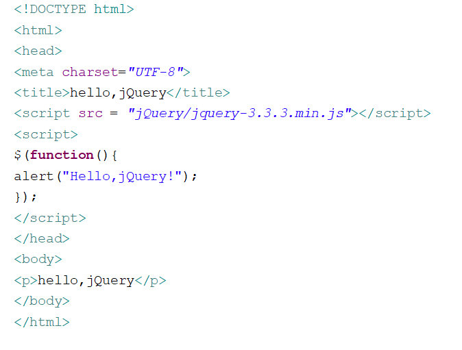
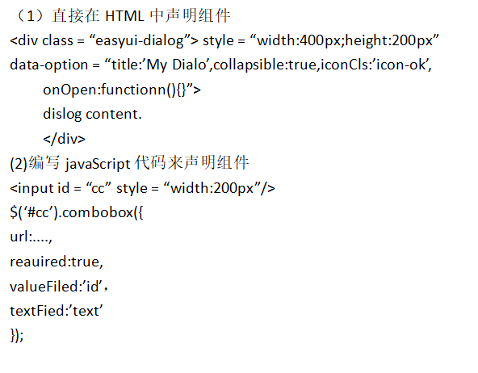

1.什么是jquery？如何使用JQuery？试编程示例加以说明。
jQuery 是一个快速、简洁的 JavaScript 框架，诞生于 2005 年，由 John Resign 开发。
它封装 JavaScript 常用的功能代码，提供一种简便的 JavaScript 设计模式，优化 HTML 文档操作、事件处理、动画设计和 Ajax 交互。
jQuery 是目前最受欢迎的 JavaScript 框架。它使用 CSS 选择器来访问和使用 jQuery：。
jQuery 库包含的功能包括：HTML 元素选取、HTML 元素操作、CSS 操作、HTML 事件函数、JavaScript 特效和动画、HTML DOM 遍历和修改、AJAX 异步请求方式等。
操作网页上的 HTML 元素（DOM 对象）。在浏览器中预览该网页文件，则可以看到在当前窗口中弹出一个提示对话框，内容为“hello, jQuery”。
jQuery( ) 是 jQuery 库文件的接口函数，所有 jQuery 操作都必须从该接口函数切入。
jQuery( ) 函数相当于页面初始化事件处理函数，当页面加载完毕，会执行 jQuery( ) 函数包含的函数。$(function() {}) 是 $(document).ready(function(){}) 的简写。

5.使用EasyUI之前必须先声明UI控件，有哪两种声明方法？
